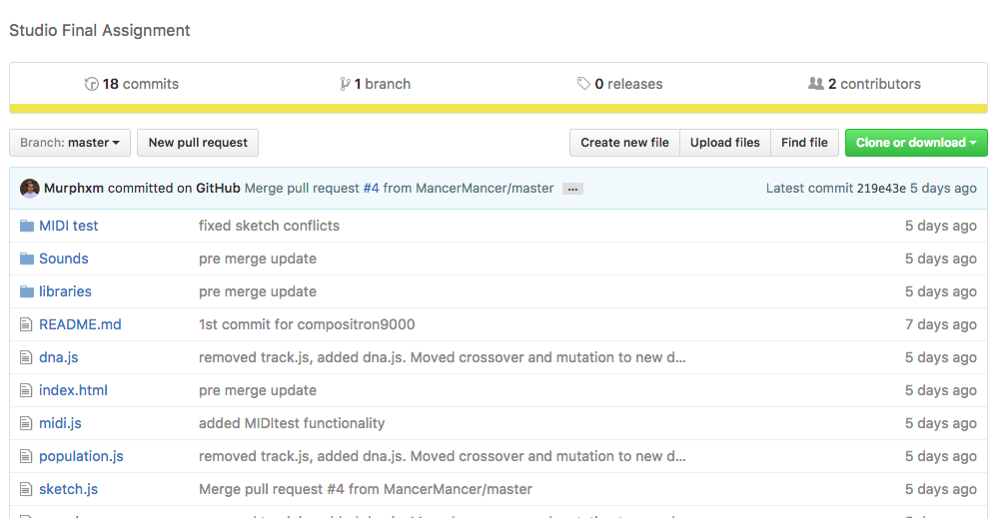

We initially tried to use Google Magenta, a pre-beta program which utilises technologies such as tensor-flow to create a sofisticated artifical intelligence. Magenta is being written by Google to allow computers to create art and music.
Unfortunately, due to our lack of skill in all areas around AI, Tensor-Flow and the buggy nature of Magenta we were unable to use this technology. We tried for weeks to get it up and running, and passed so many errors, but it got to the point where it felt like all we were getting was one error after the other and it never ended.
It's still worth exploring our process from start to finish on how we tried to get it working, so let's begin. Initially, Murphy was going to get the main Tensor-Flow program working while patrick wrote the genetic algorithm and Sam would create all of the files for the program to learn from and then also turn what the program gave out into music.
After the first week, Murphy had begun to explore how magenta works by setting up a docker version on his own system in an attempt to run it. This unfortunately failed. During this time, Patrick couldn't work on the actual algorithm for Tensor-Flow so he instead continued his research on how it would work and began sketching a visual version of the layout.
The image above is not an actual error we got, we just don't have any screenshots of them
At the end of week two, Sam had created a server to host everything, and set it up with Tensor-Flow, Magenta and everything else that should have been needed to get it up and running, not being confined to a docker image. He then allowed Murphy access to remove connect to the server to do anything he needed. During this stage they kept getting errors of which they didn't understand and painstakingly got through one after the other, but they seemed to never end.
Week three of Magenta ended pretty early as we made the group decision to leave magenta and work on our own from the ground up.
After all of the failed attempts at using Magenta and time running out we decided to write our own from the groun up. This may sound counter-intruitive to write our own from the beginning but since we are writing every line we know what is going on and don't have to work out why nothing is working with the very limited documentation available.
We first begun with creating a repository on github to store the data and also allow collaboration on the code. So patrick could write the algorithm and murphy could write the actual supporting code.
For this we decided to use P5.js as it allowed to to be setup and run 24/7 on a web server and many people could access it at once, not just one person who has the files downloaded.
Now when it comes to the final sound output, unfortunately Murphy was tasked with getting the output from the AI to a file and then Sam was going to convert that to sound. This part never got done, and so we were unable to get the musical output complete, however everything else still works.
With every group project, communication and organisation is always an important necessity. In this assignment, we utilised both Trello and Slack for our orgainsation and communication. Unfortunately the Trello was only setup halfway through the progess, once we had decided to create our oww ground up version. The main point is because there was so much more to keep in place and so many more areas to keep an eye on that a Trello board was needed. It was probably a good idea to set up a digital one, not only because the studio cleanup was to happen during our development but also because Sam flew to Australia during the last week of development, so it allowed him to work remotely.
Well the system has to run off some code, so let's explore some of it. This code itself can be viewed on the github repo. <-- Click me :)
function Population() {
this.songs = [];
this.popsize = 10;
this.matingpool = [];
for (var i = 0; i < this.popsize; i++) {
this.songs[i] = new Song();
}
this.evaluate = function() {
for (var i = 0; i < this.popsize; i++) {
this.songs[i].fitness = ratings[i];
var n = this.songs[i].fitness * 100;
for (var j = 0; j < n; j++) {
this.matingpool.push(this.songs[i]);
//this.matingpool[i] = this.songs[i];
}
}
if (devShow == true) {
createP("mating pool size: " + this.matingpool.length);
}
}
this.selecting = function() {
for (var i = 0; i < this.popsize; i ++) { //for as many songs as there are
var a = floor(random(this.matingpool.length)); //selects random song from mating pool
//var b = floor(random(this.matingpool.length)); //and another
var b = this.selectParentB(a); //and another, checking that they are not the same
var partnerA = this.matingpool[a]; //assigns value to partnerA
var partnerB = this.matingpool[b]; //and the second to partnerB
var newDNA = partnerA.dna.crossover(partnerB.dna);
var child = new Song(newDNA);// //initializes child as return product of
//crossover function of partnerA, widt
//arguments: partnerB.
if (devShow) {
createP("child " + i + " (song " + a + ", song " + b + "): " + newDNA.genes)
}
child.dna.mutate(i); //runs the child through the mutate function
this.songs[i] = child; //replaces current song with newly created child
}
}
this.selectParentB = function(q) {
var p = floor(random(this.matingpool.length)); //selects random song from mating pool
if (p != q) { //if it is not equal to song a
return p; //return it as var b
} else { //otherwise...
return this.selectParentB(q); //...runs function again
}
}
this.run = function() {
for (var i = 0; i < this.songs.length; i++) {
this.songs[i].show(i);
}
}
}
function DNA(genes) {
if (genes) {
this.genes = genes;
} else {
this.genes = [];
for (var i = 0; i < 12; i ++) {
this.genes[i] = floor(random(0, 10));
}
}
this.crossover = function(partnerDNA) {//partnerDNA) {
var newgenes = [];
for (var i = 0; i < this.genes.length; i++) {
if (random(0, 1) < 0.5) {
newgenes[i] = this.genes[i];
} else {
newgenes[i] = partnerDNA.genes[i];
}
}
return new DNA(newgenes);
//return new DNA(this.partnerDNA.genes);
}
this.mutate = function(j) {
for (var i = 0; i < this.genes.length; i++) {
if (random(0, 1) < 0.01) {
this.genes[i] = floor(random(0, 10));
if (devShow) {
createP("mutated (song " + j + ", gene " + i + "): " + this.genes[i]);
}
}
}
}
}
/**
var child = new Song(this.genes); //genes refers to contents of song (instr and midi)
for (var i = 0; i < this.genes.length; i++) {
if (random(0, 1) > 0.5) child.genes[i] = this.genes[i];
else child.genes[i] = partner.genes[i];
}
return child;
}
*/